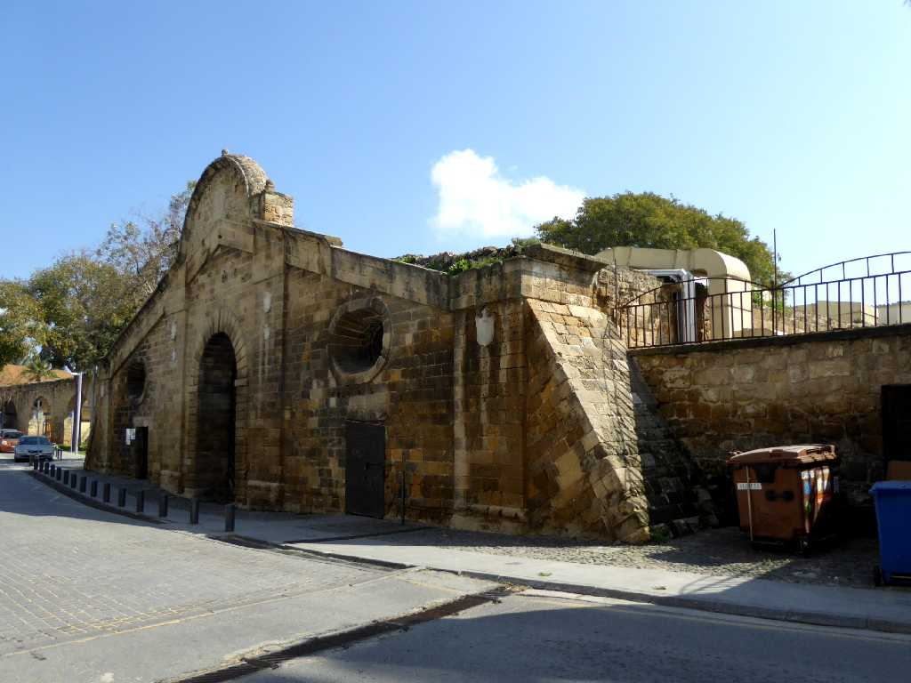
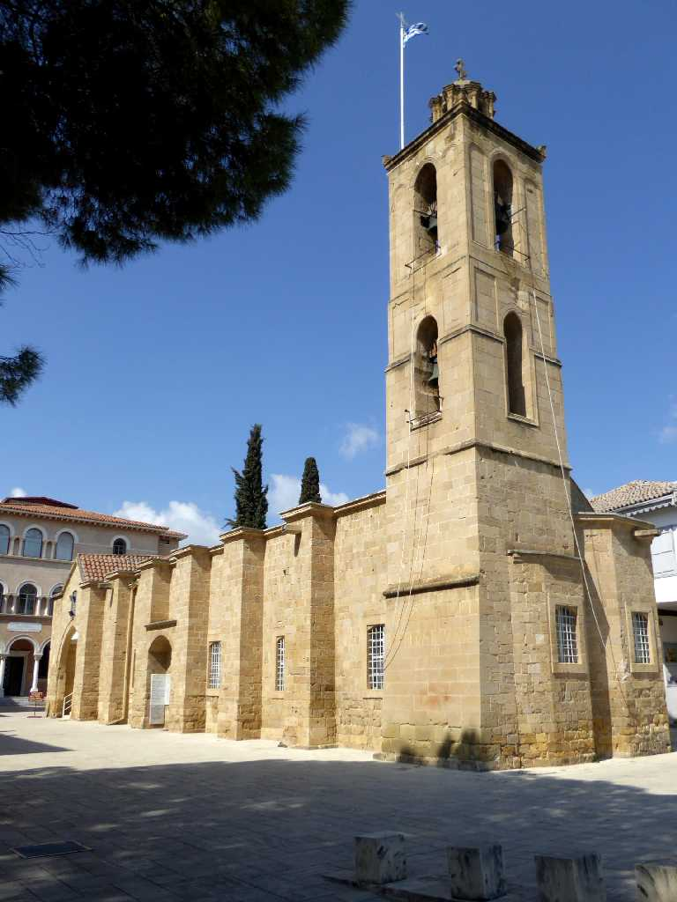
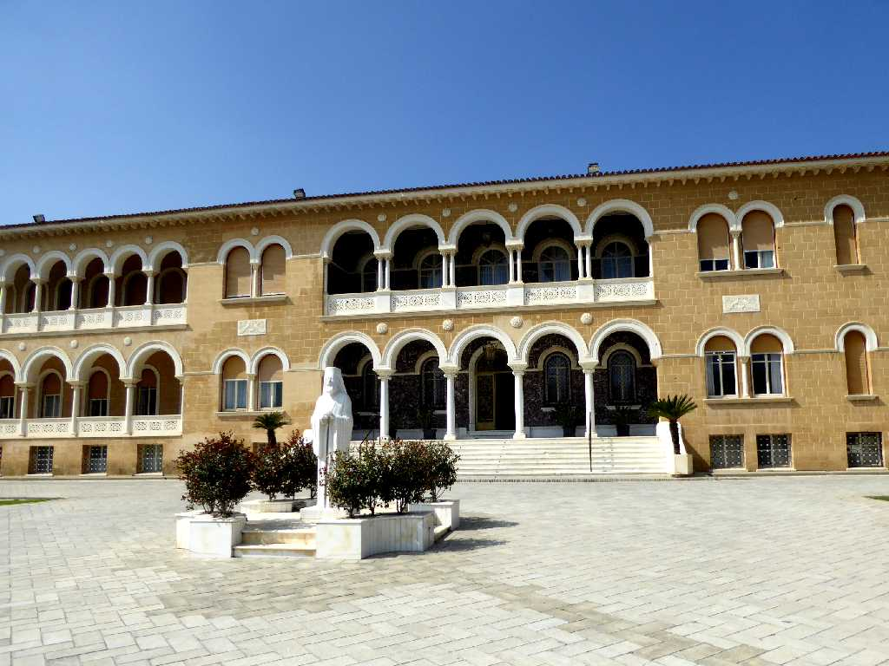
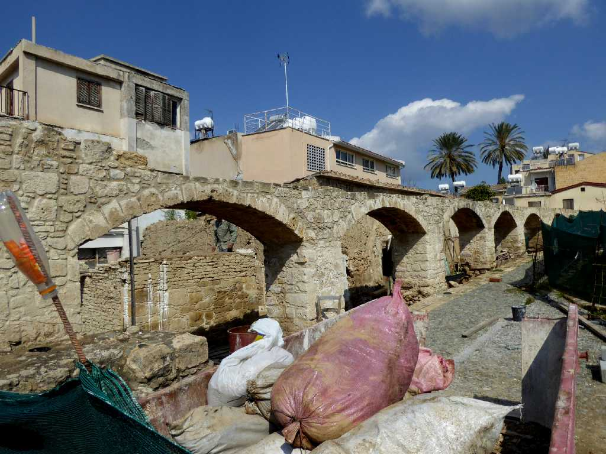

Famagusta Gate Nicosia
１６世紀のヴェネチア時代に創られた城壁にある三つの門のうちニコシア旧市街の東側に位置するファマグスタ門から旧市街に入る

St. John Cathedral Nicosia
１４世紀に創られ１８世紀に再建されたキプロス正教の聖ヨハネ大聖堂

Archbishop Palace Nicosia
キプロス正教の中心となる大主教の館

Aqueduct Nicosia
北側の山から街に水を供給するため北のキレニア門より東のファマグスタ門を結ぶキプロス最古のニコシア水道橋跡
March 7 2019 Famagusta Gate Nicosia